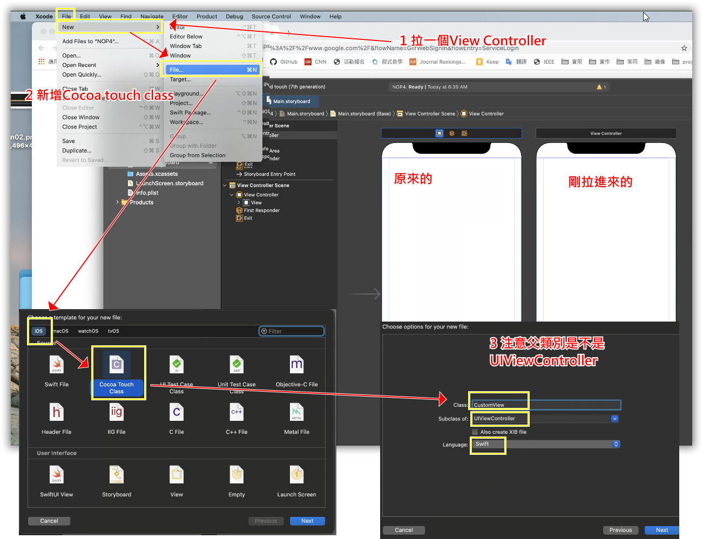
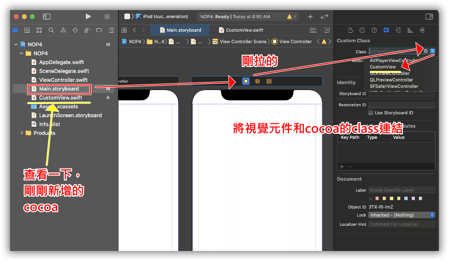
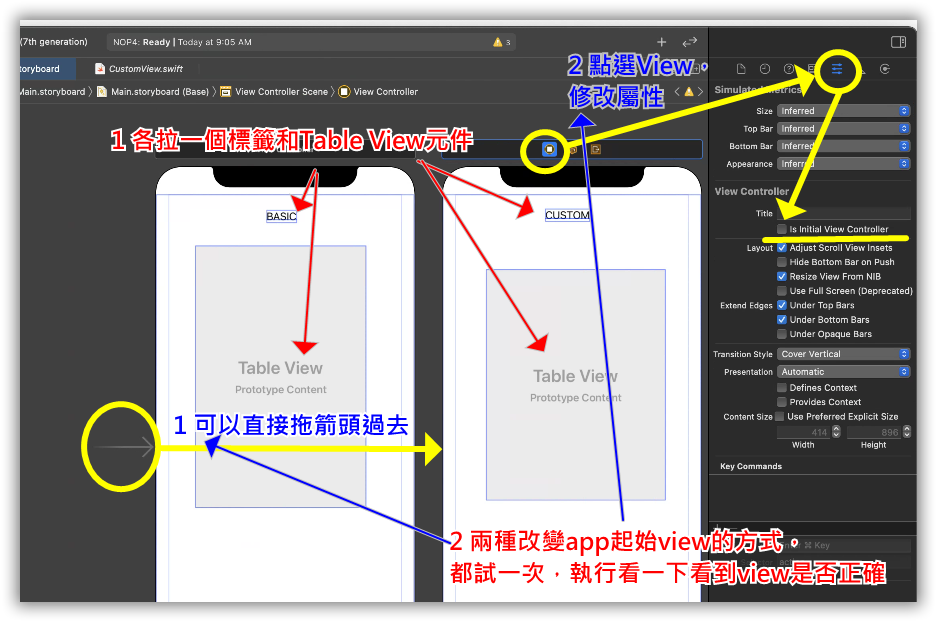
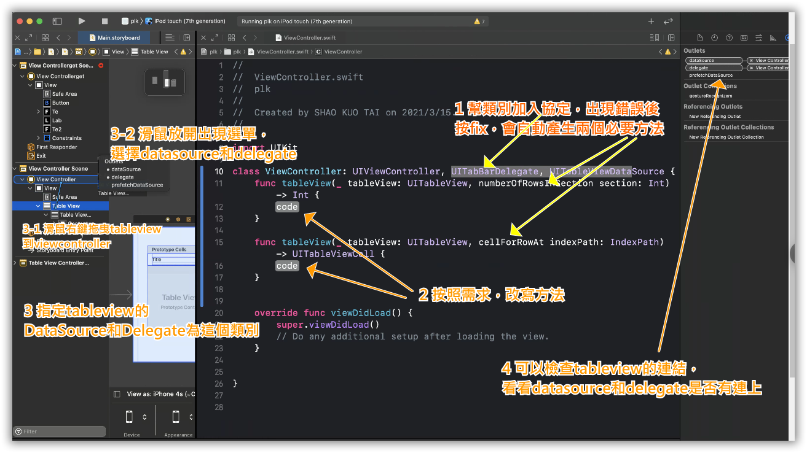
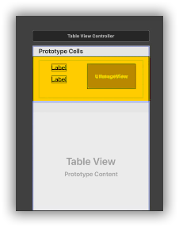
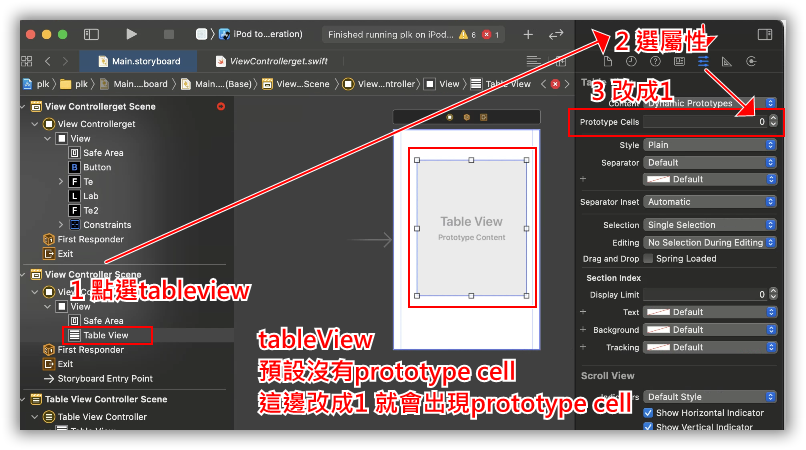
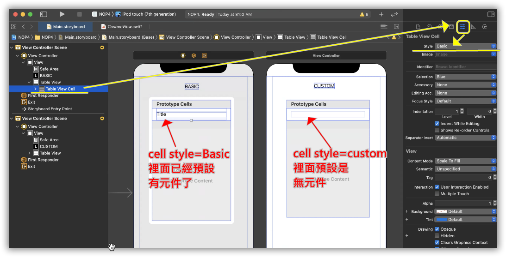
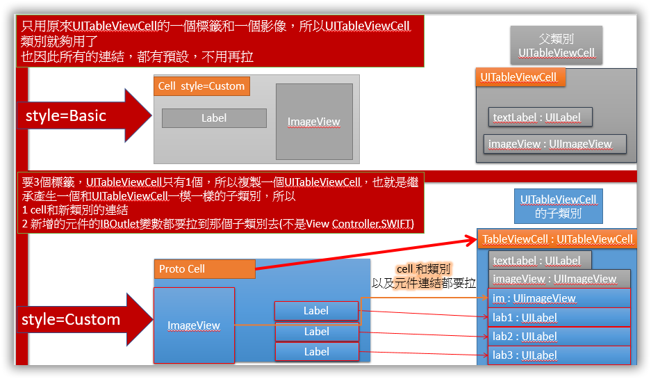
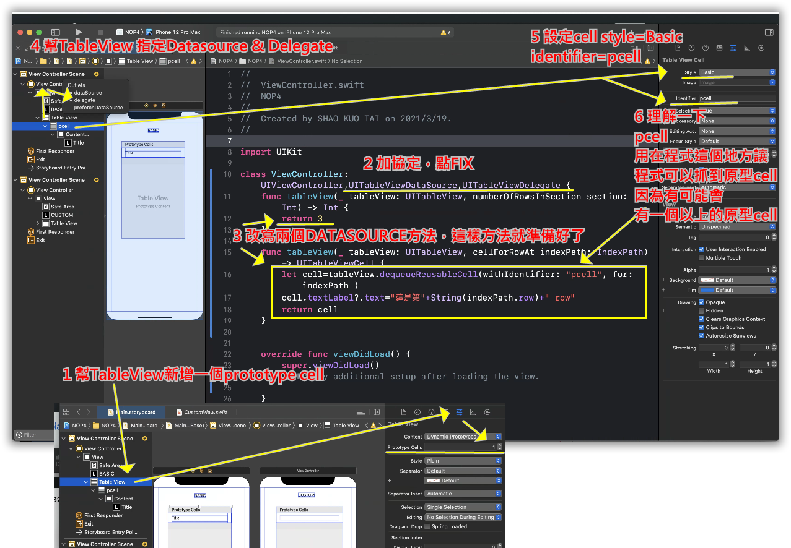
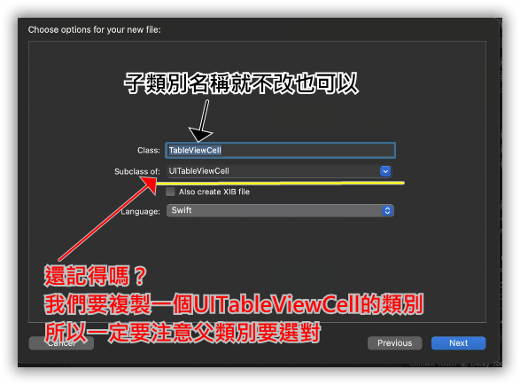

1. 新增viewcontroller及其類別並建立連結
因為等等要比較兩種設定，所以我們要建在兩個viewcontroller，切換著看，所以一開始我們先建立好環境。
開新專案，然後另外在拉一個View Controller元件，再新增一個cocoa touch class，指定UIViewController為其父類別，命名為custom.swift
在main.stroyBoard將customView的類別指定為custom.swift
2. 如何設定app開啟時的第一個view?
原先viewcontroller新增標籤，標籤文字《Basic》，新的放上標籤為《custom》，各拉一個TableView元件，測試一下兩種設定起始APP Vview的方法
3. UITableView和UITableviewController
＊＊ 剛剛建的專案等等會用到，先擱著，先來講一些重要的概念。
tableview的版面在手機APP上使用非常廣，像臉書的APP就是了。 iOS建立tableview有兩種方式
- 用空白的viewcontroller，加上tableview的元件，然後建立彼此的關聯
- 直接使用附有tableview的TableViewController

很明顯的，如果完成我們學期的專題，用TableViewController更方便，而且下一章就會直接使用tableViewController了，為什麼要特地開一個章節來提TableView這個元件?
因為使用TableView元件必須要學會很多必要的技能，所以我們這一章雖然不會用在我們學期專案上，但是裡面包含很多重要的概念。
4.UITableView結構介紹
先定義名詞，如下圖上下直排叫做欄column，左右橫排叫做列row，內容由儲存格cell組成

TableView就是一欄的表格，所以一個row只有一個cell，因此在使用時row和cell會交互混在一起使用，可以把它視為就是儲存格。
tableview的結構如下圖，tableview包著cell，然後cell裡面放元件

，tableview要顯示時，必須
- 告訴他有幾個row?
- 每個row裡面的元件要放什麼資料?
5 DataSource和Delegate是甚麼?
資料來源(datasource)-
上面提到的要顯示tableview，必須提供它總共要顯示幾個row、每個cell裡面的資料，所以需要有一個機制來提供他資料。
事件處理委派(delegate)-
另外，以gmail app為例，tableview列出信件列表，點選row就可以開啟信件，滑動row就刪除或者封存，點選和滑動都是一個事件，需要提供事件處理程式。
以上兩點一個是提供資料來源，另一個是提供事件處理程式，在這邊DataSource和Delegate就是指這兩件事情。
TableView提供了兩個協定(UITableViewDelegate, UITableViewDataSource)來處理這兩件事
- UITableViewDataSource
- UITableViewDelegate
定義一些方法，tableview要顯示時，就呼叫這些方法，這些方法就會傳回tableview所需要的資料。
定義一些事件處理程式，row被點擊或著滑動就去執行這些事件處理程式。
6 如何將UITableView連結到UITableViewDelegate和UITableViewDataSource?
UITableViewDelegate和UITableViewDataSource都是一些定義好的方法，例如
剛才提到的UITableViewDataSource就要指定資料源，這個資料源可以提供tableview的所需要的資料。具體而言，資料源是甚麼樣的形式?其實就是像下面這兩個方法
- 傳回表格有幾個row，所以這個方法傳回值是Int
- cell本身有序號，開啟時，每個cell就用自己的編號(indexPath.row)去呼叫下面程式， 下面程式根據序號將對應資料填入cell裡面的各個元件，再傳回cell，所以方法傳回值是UITableViewCell。
func tableView(_ tableView: UITableView, numberOfRowsInSection section: Int) -> Int {
func tableView(_ tableView: UITableView, cellForRowAt indexPath: IndexPath) -> UITableViewCell {
這兩個方法的名稱都是tableView，而且接下來還有一堆方法都是tableView， 為了上課說明方便我會稱呼他們為number of row和cell for row
tableview呼叫number of row，可以得到總共有多少row
tableview的每個cell呼叫cell for row方法時， 把自己的序號用indexPath.row帶進去， cell for row就把該序號的資料放進去cell裡面的元件，完成資料裝載。
UITableViewDelegate和UITableViewDataSource就是協定
協定有點像是java的介面，裡面定義了一些特定目的的方法名稱，
如果類別加了協定就必須把那些方法寫出來，那類別就具有擔任datasource和delegate的資格。
那麼tableview就可以指定這個類別為datasource和delegate，在需要資料或事件被觸發時，知道到那一個類別去找這些方法。
所以將UITableView連結到UITableViewDelegate和UITableViewDataSource的步驟如下:
- 找一個類別加入協定
- 改寫協定所規定的方法
- 指定tableview的 DataSource和Delegate為這個類別 
一般挑tableview所在的viewcontroller最方便，所以在類別宣告時加入協定，如下:
class ViewController: UIViewController, UITableViewDelegate, UITableViewDataSource {
加入協定後會產生警告，要求你必須把tableview需要的那些方法定義出來， 按一下紅色錯誤訊息，選擇fix，xcode會自動幫你加入必要的方法。然後你就按你的開發需求改寫這些方法， 讓tableview可以經由這些方法取得資料來顯示。

7 什麼是prototype cell?
假設我們總共要顯示100個row，我們不可能在mainstory board上拉100個cell， 而且想一下臉書的動態消息，往下滑永遠滑不完。所以實際的做法是設計一個cell的內含物， 例如哪邊放label，或者那邊放image， 雖然只設計一個，但是可以顯示無數個， 只要我們能夠設定我們總共要顯示多少個， 然後提供每一個cell的資料就可以了。prototype 是原型的意思， 而prototype cell就是我們設計好的要顯示的樣式，如下圖
8. Tableiew-cell-style設定成basic和custom有什麼區別?
tableView元件拉進來時，預設沒有prototype cell，要先新增一個
比較basic和custom兩者，你應該可以發現basic有預設的標籤，而custom則完全空白。
仔細考慮一下，tableview cell是可能放各種元件上去的，假設它放了一個imageView， 我們將會在cell for row那個方法中使用程式把影像指定到cell裡面的imageview，所以我們需要指定IBOutlet變數才能在程式中將image放進去， 但是不一定有多少row也沒辦法事先命名，甚至再想一下，往下滑動臉書動態消息無窮無盡的，那個imageview要怎麼命名呢?
實際的做法是TableView cell也是有類別與之連結，就是UITableViewCell， 在這類別中已經預先拉好imageView的變數為其成員變數，當tableview要顯示時會產生一堆cell物件(使用UITableViewCell)， cell本身有序號所以可以抓到cell物件，抓到cell物件後就可以使用其成員變數，就是IBOutlet變數來寫程式放資料進去。
UITableViewCell預設已經連結一個標籤和一個imageview，如果設定style=Basic，則就不能再新增元件，只能使用那兩個元件，
如果設定style為custom，cell就可以新增元件，那問題來了，你新增的元件要拉IBOutlet變數吧，拉到哪一個程式?
我以View Controller為例子說明。
目前為止我們操作都是針對View Controller所以都拉到viewcontroller.swift，他是定義viewController的類別，他的父類別是UIViewController。
UIViewController本身就是一個空白完全沒有元件的view，如果新增元件在UIViewController， 那麼以後你寫程式用到UIViewController，那些元件就會礙眼的出現在那邊。這樣是很笨的事情。怎樣做才聰明? 當然是複製一個和UIViewController一模一樣的，那個複製品可以隨便我們亂搞，下次要寫新的專案用的的時候，再拿原版複製一份來用， 原版永遠保持清白整齊。這樣聽起來是不是很有感?看下面這行，
class ViewController: UIViewController{
你應該可以看出那一個是原版，那一個是複製品吧。因此你可以在viewController.swift任意的放元件，而父類別UIViewController則不會被破壞
繼承很有用吧!!
回到剛剛的問題，
如果設定style為custom，cell就可以新增元件，那問題來了，你新增的元件要拉IBOutlet變數吧，拉到哪一個程式?
當然不可能是父類別UITableViewCell，所以我們會新增一個UITableViewCell的子類別， 然後把prototype cell連結到這個複製品(子類別)，大概是這樣，參考下圖。
9. 建立一個style=basic的tableview小練習
使用課程剛開始的那個專案中的Basic部分
完成後執行應該可以看到Basic的View有一個3個row的表格
10. 建立一個style=custom的tableview小練習
建立一個UITableViewCell的子類別
剛剛已經做過新增cocoa touch class 並且繼承UIViewContoleer，產生一個檔案customView.swift，
而且main.storyboard(後面簡稱MS)上那個上面有custom標籤的新增view controller已經連結到這個customView.swift，
接下來要來建立這個cell style=custom的view，所以先到MS，把起始view改成custom那個View Controller。然後後面的步驟都是針對custom的那個view。
- 選擇file/new/file，選cocoa touch class，注意父類別要選對，為了方便檔名就是TableViewCell.swist 
- 幫customView.swift加上Datasource和delegate的協定。
- customView.swift加上協定後，會因為缺少該有的datasource方法而出現錯誤，請修正他。
- 到MS，把TableView的Datasource和delegate指定到customView.swift。
- 到MS，檢查tableView的prototype cells有沒有設定1。
- 設定cell的style=custom，identifier=ccell。
- 把這個prototype cell的類別指定到TableViewCell.swift
- 在MS中幫cell拉2個Label和一個imageView。
- 拉這三個元件的IBOutlet到TableViewCell.swift
- 使用number of row方法指定會顯示3個row
- 找1張影像，拉到目錄中
- 在cell for row 中製作cell
- 最後，TableView的row hight預設是自動調整大小的可以去點掉
第2行的《as! TableViewCell》，如果沒有加，那麼你拿到的會是UITableViewCell，
也就是說程式會認為你拿到的是他的父類別，不會有你剛剛加的那3個元件，
你剛剛加的3個元件是加在你剛剛新增的TableViewCell.swift中所定義的TableViewCell類別
ccell是剛剛定義的identifier
UIImage(named: "axc.png") 可以讀取你剛剛拉進來的影像
11. 習題
使用custom的cell style，從頭不看資料做一遍 內容改成12星座
不要邊看資料邊做，要一次看完！ 後不要再看，用猜的猜錯修正後就會了，一直照著打，永遠都不會
上面有兩個標籤，一個是星座名稱，另一個是日期區間
一個imameview放每個星座對應的icon圖